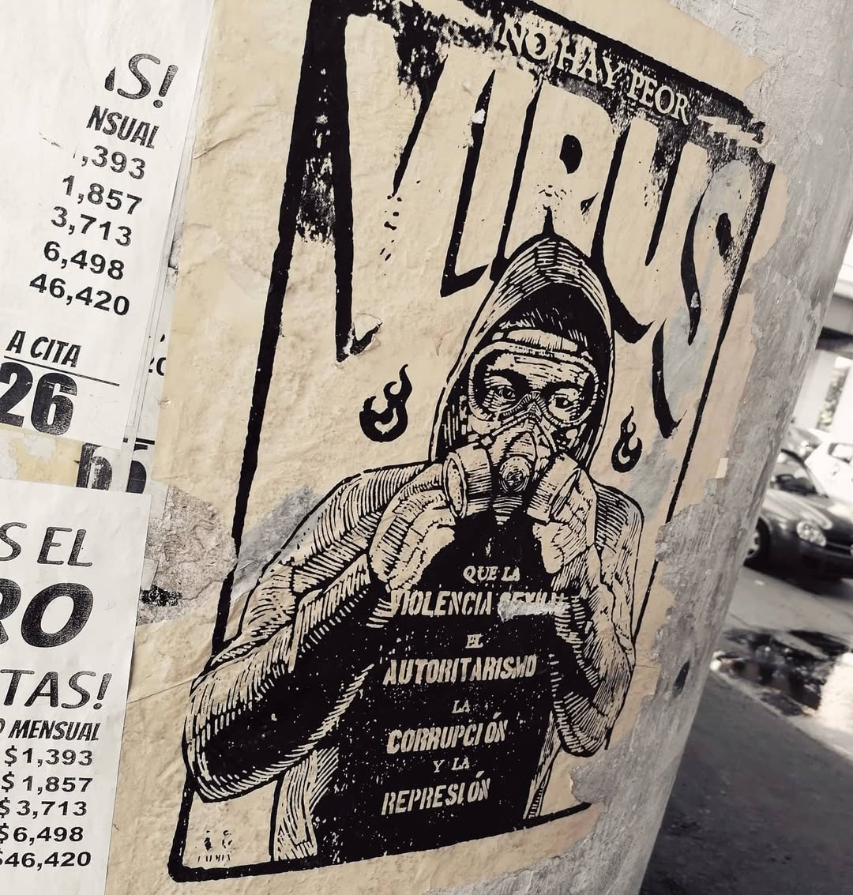

Mi Trabajo Reciente



¡Hola! Soy Luismahel Ayala, un apasionado fotógrafo y diseñador con un ojo para el detalle y una mente llena de creatividad. Mi objetivo es transformar tus ideas en imágenes impactantes y diseños memorables.
Con años de experiencia en ambos campos, me encanta combinar mi habilidad técnica con mi visión artística para ofrecer soluciones visuales únicas y personalizadas. ¡Hablemos de tu próximo proyecto!
Desde retratos y eventos hasta paisajes y productos, capturo la esencia de cada momento.
Creación de logotipos, branding, material publicitario y diseño editorial que impacta.
Desarrollo de sitios web atractivos y funcionales, optimizados para cualquier dispositivo.
Perfeccionamiento de imágenes para lograr resultados profesionales y pulidos.
Asesoramiento para tus proyectos visuales, desde la idea hasta la ejecución.
Creación de contenido audiovisual para diversas plataformas y propósitos.
Ofrezco planes personalizados para cada necesidad. Descubre el que mejor se adapta a ti.
¿Listo para crear algo increíble? ¡Contáctame directamente por WhatsApp!
O encuéntrame en: